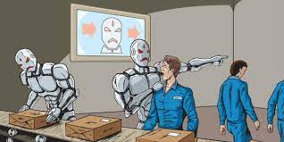

الذكاء الاصطناعي (AI) هو مجال من العلوم الحاسوبية يهدف إلى تطوير أنظمة تعتمد على الحاسوب تتصرف بطريقة تشبه الذكاء البشري. لهذا السبب، يمكن أن يكون له تأثيرات إيجابية وسلبية على المجتمع والاقتصاد. فيما يلي بعض الأمثلة على الإيجابيات والسلبيات:
تحسين الإنتاجية: يمكن للذكاء الاصطناعي أن يزيد من الإنتاجية في العديد من الصناعات من خلال تحسين العمليات وتقليل الأخطاء البشرية.
تحسين الرعاية الصحية: يمكن استخدام الذكاء الاصطناعي لتحسين تشخيص الأمراض وتوجيه العلاج بطريقة أكثر دقة وفعالية.
تحسين الأمن: يمكن استخدام الذكاء الاصطناعي لتحسين أمن المعلومات والتعرف على النشاطات الاحتيالية.
تحسين التعليم: يمكن استخدام الذكاء الاصطناعي لتحسين تجربة التعلم عبر الإنترنت وتخصيص التعليم لاحتياجات الطلاب الفردية.
فقدان الوظائف: يمكن أن يؤدي الذكاء الاصطناعي إلى فقدان بعض الوظائف البشرية بسبب الآلات التي تستطيع تنفيذ المهام بشكل أفضل وأسرع.
تهديد الخصوصية: يمكن أن يؤدي استخدام الذكاء الاصطناعي في تتبع الأنشطة الشخصية إلى تهديد الخصوصية الفردية.
التمييز العنصري: يمكن أن يؤدي الاعتماد على الذكاء الاصطناعي في اتخاذ القرارات إلى التمييز ضد بعض الأشخاص بناءً على معلومات شخصية مثل العرق أو الدين.
لتطور السلبي: يمكن أن يؤدي التطور السلبي للذكاء الاصطناعي إلى تداعيات غير متوقعة وخطيرة، مثل الذكاء الاصطناعي الذي يتعلم بشكل ذاتي ويتجاوز السيطرة البشرية.
الـ Deepfake هو نوع من الذكاء الاصطناعي يستخدم لإنشاء فيديوهات وصور مزيفة تبدو وكأنها حقيقية. يمكن استخدام الـ Deepfake لتزييف مقاطع فيديو للسياسيين أو الشخصيات العامة لنشر معلومات مضللة أو القيام بأعمال احتيالية. هذا يمكن أن يؤدي إلى تأثيرات سلبية على السياسة والمجتمع.
